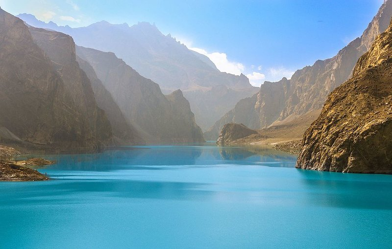

Attabad Lake is one of the most breathtaking attractions located in Gilgit Baltistan. It's home to a number of ski resorts, summer outdoor recreation, and tourist attractions. Snow and skiing are a significant part of the area's reputation.
 Find out moreAs spawning season approaches the fish acquire a humpback and protuberant jaw. After spawning they die and their carcasses provide a feast for gatherings of mink, bears, and Bald eagles.

Attabad Lake is full of wonderful places to stay. You have the ability to sleep in the outdoors in a tent, or relax like a king at a five star resort. Here are our top three resorts:

One of most important things when it comes to traveling through the great outdoors is packing accordingly. Here are a few tips: